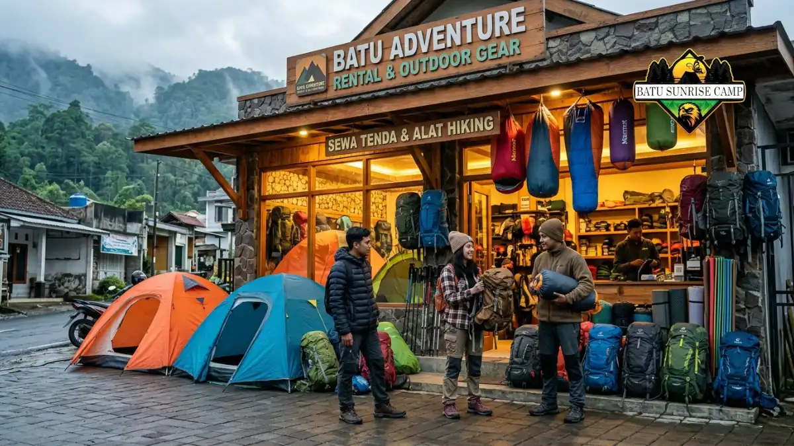

Harga alat camping di Batu bervariasi tergantung jenis alat, apakah disewa atau dibeli, kapasitas atau ukuran, serta kelengkapan paket yang ditawarkan penyedia jasa maupun toko outdoor setempat.
Apa Itu Harga Alat Camping di Batu
Harga alat camping di Batu merujuk pada biaya yang dikeluarkan wisatawan untuk mendapatkan perlengkapan berkemah, baik melalui skema sewa maupun pembelian langsung di toko outdoor kawasan Batu, Jawa Timur.
Batu dikenal sebagai destinasi wisata pegunungan dengan udara sejuk, sehingga banyak wisatawan yang datang khusus untuk berkemah di sekitar kawasan Coban Rondo, lereng Gunung Panderman, atau bumi perkemahan komersial lainnya.
Karena tidak semua wisatawan membawa alat sendiri dari daerah asal, kebutuhan akan alat camping baik sewa maupun beli menjadi cukup tinggi, terutama menjelang akhir pekan dan musim liburan sekolah.
Untuk Siapa Informasi Harga Alat Camping Ini Dibutuhkan
Informasi harga alat camping di Batu paling relevan bagi kelompok berikut:
- Wisatawan dari luar kota yang ingin menyewa alat tanpa membawa perlengkapan sendiri.
- Pendaki pemula yang mempertimbangkan membeli alat camping pertama mereka.
- Rombongan komunitas atau kampus yang menyusun anggaran acara camping bersama.
- Pengelola event outdoor yang membutuhkan estimasi biaya alat untuk peserta dalam jumlah besar.
Kapan Waktu yang Tepat Mencari Informasi Harga Alat Camping
Waktu terbaik mencari informasi harga alat camping adalah beberapa minggu sebelum jadwal keberangkatan, terutama jika rencana camping jatuh pada musim liburan panjang seperti libur sekolah atau pergantian tahun.
Pada periode tersebut, permintaan sewa alat camping cenderung meningkat sehingga harga dan ketersediaan unit dapat berubah lebih cepat dibanding hari biasa.
Mengapa Harga Alat Camping di Batu Penting Diketahui Lebih Awal
Mengetahui kisaran harga alat camping lebih awal membantu wisatawan menyusun anggaran perjalanan secara lebih akurat, menghindari biaya tak terduga, serta memberi waktu untuk membandingkan beberapa penyedia jasa sewa maupun toko outdoor sebelum memutuskan pilihan akhir.
Berapa Kisaran Harga Alat Camping di Batu
Secara umum, harga sewa tenda dome kapasitas kecil untuk dua hingga tiga orang cenderung lebih terjangkau dibanding tenda kapasitas besar untuk rombongan enam orang ke atas.
Harga sewa sleeping bag dan matras biasanya dihitung terpisah per unit per malam, sementara kompor portable dan peralatan masak umumnya disewakan dalam paket tersendiri.
Untuk alat yang dibeli langsung di toko outdoor, harga tenda baru umumnya lebih tinggi dibanding biaya sewa satu kali pakai, namun menjadi lebih ekonomis jika alat tersebut digunakan berulang kali dalam jangka panjang.

Toko perlengkapan outdoor di kawasan Batu menyediakan berbagai alat camping untuk wisatawan.
Apa Saja Faktor yang Memengaruhi Harga Alat Camping di Batu
Beberapa faktor utama yang menentukan besar kecilnya harga alat camping antara lain:
- Jenis alat, apakah tenda, sleeping bag, matras, atau perlengkapan masak.
- Kapasitas dan ukuran alat, misalnya tenda dua orang dibanding tenda delapan orang.
- Skema harga, apakah sewa harian, sewa mingguan, atau pembelian langsung.
- Musim wisata, karena permintaan tinggi saat libur panjang dapat memengaruhi tarif sewa.
- Lokasi penyedia, karena toko atau jasa sewa yang lebih dekat area wisata terkadang mematok harga berbeda dibanding yang berada di pusat kota.
Lebih Hemat Menyewa atau Membeli Alat Camping di Batu
Menyewa alat camping umumnya lebih hemat bagi wisatawan yang hanya berkemah sesekali, karena tidak perlu mengeluarkan biaya besar di awal maupun biaya perawatan jangka panjang.
Sebaliknya, membeli alat camping lebih menguntungkan bagi mereka yang berencana camping secara rutin, karena biaya pembelian dapat lebih hemat dibanding akumulasi biaya sewa dalam jangka waktu panjang.
Sebagai gambaran umum, Kota Batu termasuk salah satu destinasi wisata alam populer di Jawa Timur dengan kunjungan wisatawan yang cukup tinggi sepanjang tahun, sehingga pertumbuhan usaha sewa maupun toko alat outdoor di kawasan ini turut mengikuti tren kunjungan wisata tersebut.
Apa Saja Jenis Alat Camping yang Umum Disewa atau Dibeli di Batu
Beberapa jenis alat camping yang paling sering dicari wisatawan di Batu meliputi:
- Tenda dome berbagai kapasitas, mulai dari dua orang hingga rombongan besar.
- Sleeping bag dan matras untuk kebutuhan tidur yang lebih nyaman.
- Kompor portable beserta gas kaleng untuk memasak sederhana di lokasi.
- Lampu tenda dan senter untuk penerangan tambahan saat malam hari.
- Carrier atau tas gunung bagi wisatawan yang melakukan trekking sebelum berkemah.
Kesalahan Umum Saat Membandingkan Harga Alat Camping
Kesalahan yang sering terjadi antara lain hanya membandingkan harga tanpa mengecek kelengkapan paket, tidak menanyakan biaya tambahan seperti antar-jemput alat, serta tidak memperhitungkan kondisi barang sebelum menyewa atau membeli.
Kesalahan lain adalah memilih alat berdasarkan harga termurah tanpa mempertimbangkan kesesuaian kapasitas dengan jumlah rombongan, yang berisiko membuat alat tidak nyaman digunakan di lokasi camping.
Perbandingan Harga Alat Camping di Toko Outdoor dan Jasa Sewa Lokal
Toko outdoor umumnya menjual alat camping baru dengan variasi merek dan kualitas yang lebih beragam, sementara jasa sewa lokal di Batu cenderung menawarkan paket alat yang lebih ringkas dan disesuaikan kebutuhan wisatawan jangka pendek.
Wisatawan yang hanya membutuhkan alat untuk satu kali perjalanan umumnya lebih diuntungkan memilih jasa sewa dibanding membeli alat baru dari toko outdoor.
Tips Menghemat Biaya Alat Camping di Batu
- Bandingkan harga dari beberapa penyedia sewa maupun toko sebelum memutuskan.
- Pilih paket bundling yang mencakup beberapa alat sekaligus untuk mendapatkan harga lebih efisien.
- Sewa alat dalam jumlah rombongan besar untuk potensi harga per orang yang lebih hemat.
- Hindari musim puncak liburan jika ingin mendapatkan harga standar tanpa kenaikan musiman.
- Cek kondisi alat sebelum membayar agar tidak dikenakan biaya tambahan akibat kerusakan.
Kesimpulan
Harga alat camping di Batu dipengaruhi oleh jenis alat, skema sewa atau beli, serta musim kunjungan wisata.
Membandingkan beberapa penyedia dan menyesuaikan kebutuhan dengan anggaran dapat membantu wisatawan mendapatkan alat camping yang tepat tanpa biaya berlebihan.
Untuk pembahasan lebih spesifik, baca juga artikel mengenai perbandingan harga sewa tenda di Batu, cara memilih toko alat outdoor terpercaya, dan tips menghemat biaya perlengkapan camping.